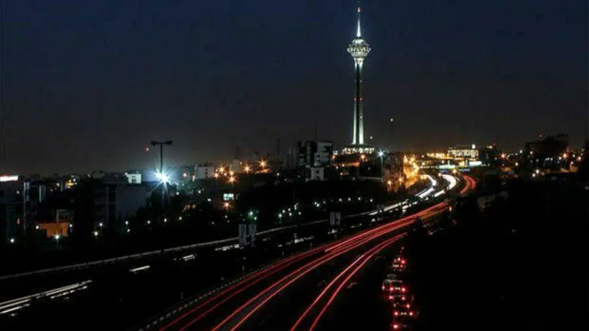

Événements Quotidiens
Actualités et événements en Iran et autour de l'Iran, sélectionnés par Iran Paad — du plus récent au plus ancien.
 16 novembre 2025
16 novembre 2025L'affaissement des sols vide la terre sous les monuments historiques de l'Iran
 16 novembre 2025
16 novembre 2025Des dizaines de maisons démolies alors que les forces militaires et des agents municipaux mènent un raid dans le quartier de Keshavarz à Zahedan
 16 novembre 2025
16 novembre 2025Des médias font état d'un « rationnement » de l'eau en bouteille en Iran
26 octobre 2025La Splendide Célébration des Rois
22 octobre 2025Vague de critiques d'internautes contre l'hypocrisie des responsables et le hijab obligatoire après la diffusion de la vidéo du mariage de la fille de Shamkhani
8 juillet 2025Netanyahou : « Nous avons retiré deux tumeurs cancéreuses de la République islamique, mais cela ne signifie pas une destruction permanente »
8 juillet 2025La proposition de Netanyahou d'attribuer le prix Nobel de la paix à Trump
8 juillet 2025Trump : le gouvernement iranien ne doit plus scander « Mort à l'Amérique et à Israël »
8 juillet 2025Witkoff : un nouveau cycle de pourparlers nucléaires avec la République islamique aura lieu la semaine prochaine
6 juillet 2025Trump : je parlerai probablement avec Netanyahou d'un accord permanent avec l'Iran
6 janvier 2025Gouverneur du Guilan : la profondeur de la lagune d'Anzali est passée de 10 mètres à 20 centimètres

6 janvier 2025